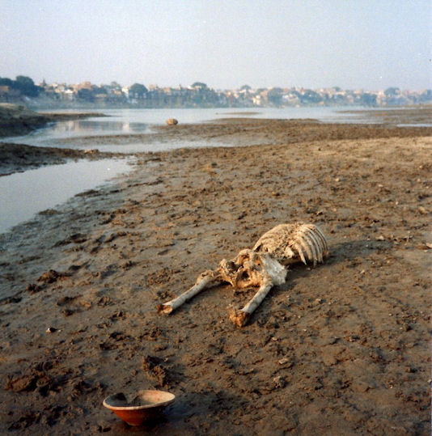

mailto:payer@payer.de
Zitierweise | cite as:
Payer, Alois <1944 - >: Sanskritkurs. -- Lösung der Übungen. -- Übungen Lektion 41 - 45. -- Fassung vom 2009-01-22. -- URL: http://www.payer.de/sanskritkurs/uebung41.htm
Erstmals hier publiziert: 2009-01-22
Überarbeitungen:
Anlass: Lehrveranstaltungen 1980 - 1984
©opyright: Dieser Text steht der Allgemeinheit zur Verfügung. Eine Verwertung in Publikationen, die über übliche Zitate hinausgeht, bedarf der ausdrücklichen Genehmigung des Verfassers
Dieser Text ist Teil der Abteilung Sanskrit von Tüpfli's Global Village Library
Falls Sie die diakritischen Zeichen nicht dargestellt bekommen, installieren Sie eine Schrift mit Diakritika wie z.B. Tahoma.
Die Devanāgarī-Zeichen sind in Unicode kodiert. Sie benötigen also eine Unicode-Devanāgarī-Schrift.
A) Übersetzen Sie die beiden Sprichwörter am Anfang der Lektion.
पुस्तकस्था च या विद्या
परहस्ते च यद्धनम् ।
कार्यकाले समुत्पन्ने
न सा विद्या न तद्धनम् ॥१॥Wissen, das in Büchern steht, Geld, das in anderer Hand ist : wenn man es braucht, dann ist das kein Wissen und kein Geld.
उपदेशो हि मूर्खाणां
प्रकोपाय न शान्तये ।
पयःपानं भुजङ्गानां
केवलं विषवर्धनम् ॥२॥Unterricht von Dummköpfen führt zu Aggression, nicht zu Frieden. Wenn man Schlangen Milch zu trinken gibt, vermehrt das nur ihr Gift.
B) Übersetzen Sie:
बुद्धम् शरणं गच्छामि धर्मं शरणं गच्छामि सङ्घं शरणं गच्छामीति बुद्धगतैर्वक्तव्यम् ॥१॥
Wer zu Buddha gegangen ist, soll sprechen: "Ich nehme meine Zuflucht zu Buddha, ich nehme meine Zuflucht zur Buddhalehre, ich nehme meine Zuflucht zur Gemeinschaft der durch die Buddhalehre zur Erlösung gelangten."
Diese dreifache Zuflucht ist äußerst wichtig, um auf dem Weg zur Erlösung die nötige Motivation, Energie und Ausdauer zu haben.
Es gab und gibt ja eine unüberschaubare Zahl von Weisheitslehrern und Religionsstiftern. Es ist unmöglich, allen einzeln zu folgen, um zu erproben, was ihre Lehren taugen. So muss man eine Auswahl treffen. Die Persönlichkeit eines solchen Lehrers muss als besonders vertrauenswürdig erscheinen, so dass man sich auf ihn einlassen kann und will. Dieses Vertrauen, dieser Glaube ist der Inhalt der ersten Zuflucht, der Zuflucht zu Buddha.
Das Wesentliche für Buddhisten ist aber nicht eine Erlöserpersönlichkeit im Dass ihres Gekommenseins"1, sondern das Wesentliche für Buddhisten ist die Erlösungslehre, die es dem Einzelnen ermöglicht, den Weg zur Erlösung selbst zu gehen und so Erlösung selbst zu verwirklichen. Dazu muss man von dieser Lehre vorläufig d. h., solange man noch nicht aus eigener Erfahrung weiß, dass sie zum Ziel führt so überzeugt sein, dass man die Energie aufbringt, diese Lehre auf ihren Wahrheitsgehalt zu testen. Dies ist der Inhalt der zweiten Zuflucht, der Zuflucht zur Lehre Buddhas oder dem Dharma/ Dhamma, wie diese Lehre auf Sanskrit bzw. Pāli heißt.
1 Rudolf Bultmann (1884-1976): "Entscheidend ist nur das Daß des Gekommenseins Jesu, nicht das Was, das heißt nicht die historisch verifizierbaren Daten seines Lebens und Wirkens."
Auch der beste Lehrer und die beste Lehre sind für mich nutzlos, wenn sie für einen normalen Sterblichen nicht nachvollziehbar sind. Deshalb ist es wichtig, überzeugt zu sein, dass es auch andere auf diesem Weg geschafft haben. Dies ist der Inhalt der dritten Zuflucht, der Zuflucht zur Gemeinschaft derer, die auf dem Weg Buddhas zur Erlösung gelangt sind, auf Sanskrit bzw. Pāli zum Saṅgha.
काशीं पत्स्ये गङ्गां द्रक्ष्यामि तत्र च मरिष्यामीति मन्यमानो मान्यो वृद्धनरः पुत्रांश्च पुत्रपुत्रांश्च धनं च तत्याज काशीं च प्राव्रजत् । एवं च रोध्यं दुःखं तरिष्यतीति मन्ये ॥२॥
"Ich will nach Benares gehen, den Ganges sehen und dort sterben." Mit diesem Gedanken hat der ehrenswerte alte Mann Söhne, Sohnessöhne und Besitz verlassen und ist nach Benares aufgebrochen. Ich denke, dass er so das zu beendene Leiden überwinden wird.
कन्यां व्युवह तस्यां च पुत्रमजनयं महाधनं च लेभ एवं सुखमापेत्यतीते मुमोह । ततः प्रजज्ञौ सुखाद्दुःखं जायते तस्माल्लोकसुखमपि त्यजनीयं न च किंचिदिन्द्रियैः स्प्रष्टव्यमिति ॥३॥
In der Vergangenheit täuschte ich mich, dass ich das Glück erreicht habe, da ich ein Mädchen geheiratet, mit ihr einen Sohn gezeugt, und großen Reichtum erworben hatte. Dann erkannte ich, dass auch Glück Leiden entsteht und man deshalb auch das Glück der Welt aufgeben und nichts mit seinen Sinnen berühren sollte.
विक्रेयाणि विक्रीयापुत्रवैश्यो भिक्षुभ्यो विक्रयफलमददाद्दानपुण्यं चादत्त । एतत्कर्म स्तुत्यमिति भिक्षवः प्रोचुर्बुद्धिमन्तस्तु विकल्पयन्ति किमेवं कुर्वाणो वश्यः पुण्यं चकारेति ॥४॥
Der sohnlose Vaiśya verkaufte Ware, schenkte Mönchen den Verkaufserlös und erhielt das Verdienst seiner Freigebigkeit. Die Mönche verkündeten, dass diese Tat lobenswert ist, Einsichtige aber bezweifeln, ob der so handelnde Vaiśya Verdienstvolles tat.
गुरुभिः शिष्याः शासितव्याः शिष्यैरध्ययनमध्येतव्यम् ॥५॥
Lehrer müssen die Schüler unterrichten, Schüler müssen ihr Pensum lernen.
Abb.: बुद्धं शरणं गच्छामि
Pilger zum angeblichen Fußabdruck Buddhas auf dem Adams Peak (श्रीपाद), Sri
Lanka
[Bildquelle: Sailing Nomad. --
http://www.flickr.com/photos/ryanwhisner/3076149134/. -- Zugriff am
2009-01-21. --
Creative
Commons Lizenz (Namensnennung, keine kommerzielle Nutzung, keine
Bearbeitung)]
Übersetzen Sie:
प्रकृत्यैव यः कर्माणि क्रियमाणानि पश्यति स आत्मानमकर्तरं पश्यति ॥१॥
Wer sieht, dass nur die materielle Natur Taten bewirkt, der sieht, dass die Seele untätig ist.
कृष्णस्तस्य लोकस्य पिता माता पितामहो धातास्ति ॥२॥
Kṛṣṇa ist Vater, Mutter, Großvater und Schöpfer dieser Welt.
आचार्याः पितरः पुत्राश्च पितामहाः श्वशुरा नप्तरो युद्धायावस्थिताः । एतान्न हन्तुमिच्छामीत्यर्जुनो भगवद्गीतायामुवाच ॥३॥
"Meine Lehrer, Väter, Söhne, Großväter, Schwiegerväter und Enkel haben sich zum Kampf aufgestellt. Ich will diese nicht töten!" so sprach Arjuna in der Bhagavadgītā.
कवयो लब्धपुत्रतायाः पितॄन्मातॄश्च तुष्टुवुः ॥४॥
Dichter priesen Väter und Mütter, weil sie Söhne bekommen haben.
भर्त्रा भार्या भर्तव्या । तस्माद्भार्येत्युच्यते ॥५॥
Die Gattin muss vom Gatten erhalten werden. Deswegen wird sie "zu Erhaltende (भार्या)" genannt.
सत्पुत्रः पितृभ्यः पिण्डान्ददाति । पितृभिः पिण्डदानमश्यत एवं च सुखजीवो जीवितुं शक्यते ॥६॥
Ein guter Sohn gibt seinen Vorvätern Reisbällchen. Die Vorväter essen die dargebrachten Reisbällchen und so können sie ein glückliches Leben führen.
भ्रात्रा स्वसा न विवोड्धव्या । भातरि स्वसारं कामयमाने देवाः क्रुध्यन्ति ॥७॥
Ein Bruder darf seine Schwester nicht heiraten. Wenn ein Bruder seine Schwester begehrt, zürnen die Götter.
क्थं भर्तुर्भ्रातोच्यते । देवेति भर्तुर्भ्राता वक्तव्यः ॥८॥
Wie nennt man den Bruder des Gatten. Der Gattenbruder wird "Schwager" genannt.
नप्तॄणां लाभं पितैच्छत् ॥९॥
Der Vater wünschte, Enkel zu bekommen.
Abb.: कृष्णस्तस्य लोकस्य पिता माता पितामहो धातास्ति
डूंगरपुर
[Bildquelle: Dey. --
http://www.flickr.com/photos/dey/2890614471/. -- Zugriff am 2009-01-21. --
Creative
Commons Lizenz (Namensnennung, keine kommerzielle Nutzung, share alike)]
सीताविवाहः
पुरा मिथिलायां जनको नाम राजा बभूव । तस्य सुता सीता नाम । सा रूपे शीले चानुपमा बभूव । तां परिणेतुमिछ्हन्तो ऽनेके राजकुमारा जनकाय दूतान्प्रेषयामासुः ॥
जनकस्तु तां वीर्यसम्पन्नाय क्षत्रियकुमाराय दातुमैच्छत् । अतः स तां वीर्येण क्रेतव्यामकल्पयत् । तथा हि -- तस्य सकाशे गुरुतरं किमपि धनुरासीत् । य इदं धनुरुद्धृत्यास्मिन्शरं सन्धत्ते स मम सुतां परिणेष्यतीति जनकः प्रतिजज्ञे ॥
तां तस्य प्रतिज्ञां श्रुत्वा शतशो राजकुमाराः समाजग्मुः । परं नैको ऽपि तेषां तद्धनुश्चलयितुमपि शशाक । लङ्काधिपती रावणो ऽपि साटोपं समेत्य सलज्जं प्रतिनिवृत्त इति ज्ञायते ॥
सर्वान्राजकुमारान्प्रतिवृत्तान्विलोक्य को मे दुहितुर्भर्ता भविष्यतीति चिन्तापरो बभूव जनकः । अत्रान्तरे ऽयोध्याधिपतेर्दशरथस्य पुत्रः श्रीरामः सलक्ष्मणो विश्वा्मित्रेण तत्रानीयत । श्रीरामो महर्षेर्विश्वामित्रस्य वचनेन लीलयैव तद्धनुरुद्धृत्य यावत्तस्मिन्बाणमारोपयति तावत्तद्धनुर्द्वेधा भग्नं बभूव ॥
साधु साध्विति श्रीरामस्य वीर्यं प्रशशंसुर्जनाः ॥
जनकस्य राज्ञो हृदयं प्रहृष्टं बभूव । ततः स दशरथादीनानाय्य महता विभवेन सीतरामयोर्विवाहोत्सवं निरवर्तयन् ॥
(संस्कृतप्रथमादर्शे)
Sītās Heirat
Einstmals gab es in Mithilā einen König namens Janaka. Er hatte eine Tochter namens Sītā. Sie war unvergleichlich an Schönheit und Tugend. Viele königliche Prinzen, die sie heiraten wollten, schickten zu Janaka Botschafter.
Janaka aber wollte sie einem königlichen Prinzen Geben, der voll Manneskraft ist. Deswegen bestimmte er, dass sie mit Manneskraft erkauft werden muss. Nämlich so: Er hatte in seinem Besitz einen sehr schweren Bogen. Janaka versprach, dass wer diesen Bogen hochhebt und auf ihn einen Pfeil legt, seine Tochter heirate.
Als sie dieses Versprechen hörten, kamen königliche Prinzen zu hunderten herbei. Aber kein einziger von ihnen konnte den Bogen auch nur bewegen. Man weiß, dass selbst Rāvaṇa, der Oberherrscher Laṅkās, voll Stolz kam und voll Scham zurückkehrte. Als er sah, dass alle königlichen Prinzen wieder zurückkehrten, versank Janaka in tiefe Sorge, wer Gatte seiner Tochter sein würde. Inzwischen führte Viśvāmitra den Rāma, den Sohn Daśarathas, des Herrschers von Ayodhyā, zusammen mit Lakṣmaṇa dorthin. Auf das Wort des großen Ṛṣi Viśvāmitra hob der herrliche Rāma den Bogen spielend leicht auf. Sobald er einen Pfeil darauf anlegte, zersprang der Bogen in zwei Teile.
"Gut, gut" lobten die Leute die Manneskraft des herrlichen Rāma.
Das Herz König Janakas wurde froh. Da ließ er Daśaratha und die anderen kommen und ließ die Hochzeit von Sītā und Rāma mit großem Prunk ausrichten.
Abb.: श्रीसीता श्रीरामश्च
दीवाली मेला, Manchester, 2006
[Bildquelle: BinaryApe. --
http://www.flickr.com/photos/binaryape/268134691/. -- Zugriff am 2009-01-21.
-- Creative Commons
Lizenz (Namensnennung)]
A) Bilden Sie die in Zeit, Zahl, Modus u. s. w. entsprechende 2. Person zu folgenden Verbformen:
Abb.: दिशसि
ताज महल / تاج محل
[Bildquelle: Listen Up!. --
http://www.flickr.com/photos/listenup/311358968/. -- Zugriff am 2009-01-22.
-- Creative
Commons Lizenz (Namensnennung, keine kommerzielle Nutzung, share alike)]
B) Übersetzen Sie ins Sanskrit:
1. Warum sitzt ihr während der Lehrer steht?
कस्माद्गुरौ तिष्ठति सीदथ । कस्माद्गुरौ तिष्ठत्याध्वे ॥१॥
2. Bezweifelst du, ob eine gute Tat eine gute Frucht hat?
किं विकल्पयसि किं सुकर्मणः सुफलमस्तीति ॥२॥
3. Werdet ihr dem Vater den innersten Tempelschrein zeigen?
कच्चित्पितरं गर्भगृहं दर्शयिष्यथ । कच्चित्पित्रे गर्भगृहं देक्ष्यथ ॥३॥
4. Das Preislied welches Dichters hast du gesungen?
कस्य कवेः स्तोत्रमगायः ॥४॥
5. Werdet ihr diese Früchte verkaufen?
एतानि फलानि विक्रेष्यध्वे । तानि ... ॥५॥
6. Was hast du befohlen?
किमाज्ञापयः ॥६॥
7. Wann hast du dich in Benares aufgehalten (वृत्)?
कदा काश्यामवर्तथाः ॥७॥
8. Habt ihr als Opferherren die Götter mit einem Opfer verehrt?
कच्चिद्देवानयजध्वम् । कच्चिद्देवान्यजमाना अयजध्वम् ॥८॥
9. In welcher Stadt wurdest du geboren?
कस्मिन्नगरे ऽजायथाः ॥९॥
10. Wie rettest du dich (überschreitest) vor dem Feind?
कथं शत्रुं तरसि ॥१०॥
Abb.: कदा काश्यामवर्तथाः
[Bildquelle: bartpogoda. --
http://www.flickr.com/photos/bartpogoda/330322025/. -- Zugriff am
2009-01-22. --
Creative
Commons Lizenz (Namensnennung, keine kommerzielle Nutzung, keine
Bearbeitung)]
| संवादः | Gespräch |
|---|---|
| सुरेशः : अशोक१ क्व गच्छसीदानीम् ॥ | Sureśa: Aśoka, wohin gehst du gerade? |
| अशोकः : आपणे गच्छामि । सत्वरमेव कानिचित्पण्यानि क्रीत्वा निवर्तिष्ये ॥ | Aśoka: Ich gehe auf den Markt. Ich werde schnell ein paar Waren kaufen und dann zurückkehren. |
| सुरेशः : किं कश्चिदुत्सवो ऽद्य तव गृहे ॥ | Sureśa: Gibt es heute etwa ein Fest bei dir zuhause? |
| अशोकः : आम् । अद्य पितृपादानां२ जन्मदिनोत्सवः ॥ | Aśoka: Ja, heute ist Geburtstag meines verehrten Vaters. |
| सुरेशः : किं वयस्तव३ पितृचरणानाम् ॥ | Sureśa: Wie alt ist dein verehrter Vater? |
| अशोकः : पञ्चषष्टिसमायुतं४ मम पितुर्वयः । अद्य मम गृहे बहवः संबन्धिनो मित्राणि चागमिष्यन्ति । त्वयाप्यागब्तव्यम् ॥ | Aśoka: Mein Vater ist 65 Jahre alt. Heute werden viele Verwandte und Freunde in mein haus kommen. Auch du musst kommen! |
| सुरेशः : भद्र५ कतिवादन५क् आगमिष्यन्ति जनाः ॥ | Sureśa: Mein Lieber, um wieviel Uhr kommen die Leute? |
| अशोकः : समयं किं पृच्छसि । षड्वादनं६ यावदागच्छ७॥ | Aśoka: Du fragst nach der der Zeit? Komme bis spätestens sechs Uhr! |
| सुरेशः : सार्धषड्वादनं यावदागच्छामि चेत् ॥ | Sureśa: Und wenn ich bis halb sieben komme? |
| अशोकः : नैव षड्वादन एव निश्चितरूपेणागन्तव्यं त्वया ॥ | Aśoka: Keinesfalls! Du musst genau um sechs in vorgeschriebener Form kommen. |
| सुरेशः : अस्तु८ । तर्हि गच्छ त्वं । नोचेद्विलम्बो भविष्यति ॥ | Sureśa: So sei es! Geh also! Sonst wirst du dich verspäten. |
| अशोकः : (विपण्यां प्रविशति वणिजमुपसृत्य वदति च) अयि वणिग्वर९ कानिचित्पण्यानि क्रेतुमागतो ऽहम् । देहि१० शीघ्रं मय्हम् ॥ | Aśoka: (Tritt in einen Laden, geht zu Händler und sagt:) Hallo, bester aller Händler, ich bin gekommen, um einige Waren zu kaufen. Gib sie mir schnell! |
| वणिक्११ : वत्स त्वं किंकिं क्रेतुमिच्छसि । मम विपणौ बहून्युत्तमोत्तमानि पण्यानि सन्ति तानि च स्वल्पमूल्यानि । वद१२ कियत्परिमाणं किं क्रेतुमिच्छसि ॥ | Händler: Liebster, was willst du Kaufen? In meinem Laden sind viele exzellenteste Waren und die sind sehr billig. Sag wieviel du wovon kaufen willst! |
| अशोकः : सेरभारा१३ शर्करा कियता मूल्येन विक्रीयते ॥ | Aśoka: Wieviel kostet ein Seer Zucker? |
| वणिक् : नाधिक्यं मूल्यम् । केवलमष्टाणकेन१४ दास्यामि सेरभारां शर्कराम् ॥ | Händler: Nicht viel! Ich gebe dir das Seer Zucker für nur acht Anna. |
| अशोकः : तर्हि तोलयित्वा शीघ्रं सेरपरिमितां शर्करां देहि१५ ॥ | Aśoka: Dann wiege mir schnell ein Seer Zucker ab und gib es mir! |
| वणिक् : (शर्करां कर्गले संपुटीकृत्य) बाल१६ गृहाण१७ शर्कराम् । देहि च मह्यमाणकाष्टकम्१८ । सत्वरं देहि ॥ | Händler: (wickelt in Papier den Zucker zu einem Paket): Junge, nimm den Zucker! Gib mir 8 Anna! Mach schnell! |
| अशोकः : (आदाय हस्ते तस्य भारं चाल्पं विलोक्य) भो वनिक् । नैषा सेरभारा शर्करा दृश्यते । पुनः सम्यक्तोलयित्वा१९ देहि ॥ | Aśoka: (nimmt es in die Hand und merkt, dass es zuwenig wiegt): Du! Händler! Dies scheint kein Seer Zucker zu sein. Wieg es nochmals korrekt ab und gib es mir dann! |
| वणिक् : (सहासम्) किमनेन । अकिञ्चिद्करमेतत् । तव भारवहनक्लेशो ऽल्पो भविष्यति ॥ | Händler: (lachend): Was solls?! Das macht doch nichts. Du wirst weniger Mühe haben, die Last zu tragen. |
| अशोकः : (मनसि२० किंचिद्विचार्याणकचतुष्टयं२१ च तस्य पुरत उपस्थाप्य) भो श्रेष्ठिन्गृहाण२२ मूल्यम् । मया हि शीघ्रं गृहं गन्तव्यम् ॥ (इत्युक्त्वा ततः प्रस्थितः) | Aśoka: (überlegt kurz und legt ihm 4 Anna hin): Herr Kaufmann, nimm den Preis! Ich muss nämlich schnell nachhause gehen. (Nach diesen Worten bricht er auf). |
| वणिक् : रे बालक२३ । एह्येहि२४ शृणु२५ तावत् । अल्पमेव मूल्यं दत्त्वा क्व व्रजसि । आणकचतुष्टयमन्यदपि देहि ॥ | Händler: He, Bub! Komm!, komm!, hör mal! Wohin laufst du davon nachdem du mir zuwenig gezahlt hast? Gib mir weitere vier Anna! |
| अशोकः : श्रेष्ठिन्२६
। किमनेन । अकिंचित्करमेतत् । नाणकगणनाक्लेशस्ते
ऽल्पीयान्भविष्यति२७ ॥ (इत्युक्त्वा ततो जवेन
द्रवति) (विपणिस्थो वञ्चको वनिग्न२८ किमपि कर्तुमशक्नोत्केवलं तस्य मनसि२९ पश्चात्ताप एवासीत्) अशोको गृहमागत्य सर्वमपीतिवृत्तमकथयत् । तत्रस्था सर्वे ऽपि बान्धवा मित्राणि च परमानन्दं प्रापुः । इत्थं जन्मोत्सवः सानन्दं समाप्तिं यातः ॥ |
Aśoka: Kaufmann! Was solls?! Das macht doch
nichts. Wirst du nicht weniger Mühe haben, die Annas zu zählen?! (spricht's
und rennt eilig davon)
(Der betrügerische Händler in seinem Laden konnte nichts tun. Er verspürte nur Reue in seinem Herzen). Als Aśoka zuhause war erzählte er die ganze Begebenheit. Alle Verwandten und Freunde amüsierten sich sehr. So wurde die Geburtstagsfeier mit Fröhlichkeit ein Erfolg. |
| (Nach: Saral Sanskrit Shikshak III, S. 4f.) |
A) Bestimmen und übersetzen Sie folgende Formen:
B) Übersetzen Sie:
अक्रोधेन जयेत्क्रोधमसाधुं सधुना जयेज्जयेत्सत्येन चानृतम् ॥१॥
Durch Nichtzorn besiege man den Zorn, durch das Gute besiege man den Unguten, durch Wahrheit besiege man die Unwahrheit.
पुत्राः किं पितृभ्यः पिण्डान्प्रायच्छत ॥२॥
Söhne, habt ihr den Ahnvätern Reisbällchen gegeben?
कानि शास्त्राणि काश्यामध्यैथाः ॥३॥
Welche Lehrwerke hast Du in Benares studiert?
बुद्धपुत्राश्चेन्महाशयनेषु शयीरन्प्रव्रज्यायां कृतं व्रतं न चरेयुः ॥४॥
Wenn die Söhne Buddhas (= Mönche) auf großen Betten lägen, würden sie das bei der Ordination zum Novizen gegebene Gelübde nicht einhalten.
अप्यार्ययुद्धाख्यानमाख्यास्यन्तं गुरुमभ्यनन्दः ॥५॥
Hast du auch den Dichter, der die Erzählung von den edlen Kriegern vortragen wird, willkommen geheißen?
द्वेष्यमपि न द्विष्यात लोभनीयं च न लुभ्येतैवं च प्रसन्ना भविष्यथ ॥६॥
Ihr sollt Hassenswertes nicht hassen und Begehrenswertes nicht begehren, so werdet ihr abgeklärt werden.
न योत्स्य इत्यर्जुन उवाच ॥७॥
Arjuna sagte, dass er nicht kämpfen werde.
अशोच्यानशोचः प्रज्ञावादांश्च प्रवक्तुमैच्छः ।
मृताञ्जीवतश्च बुद्धिमन्तो न शोचन्ति ॥८॥
Du hast Nicht-Betrauernswerte betrauert und wolltest Worte der Weisheit verkünden. Einsichtige betrauern weder Tote noch Lebendige.

Abb.: मृताञ्जीवतश्च बुद्धिमन्तो न शोचन्ति
वाराणसी
[Bildquelle: Sgt.Steiner. --
http://www.flickr.com/photos/42114936@N00/279731957/. -- Zugriff am
2009-01-22. --
Creative
Commons Lizenz (Namensnennung, keine kommerzielle Nutzung, share alike)]
Bestimmen Sie folgende Formen:
Abb.: वदिता
Hari S. Bhartia, Co-Chairman and Managing Director, Jubilant Organosys, India,
World Economic Forum's India Economic Summit 2008 in New Delhi
[Bildquelle: World Economic Forum. --
http://www.flickr.com/photos/worldeconomicforum/3038333212/. -- Zugriff am
2009-01-22. --
Creative Commons Lizenz (Namensnennung, share alike)]
A) Übersetzen Sie ins Sanskrit (für Vergangenheitsformen bitte das Imperfekt <लङ्> verwenden):
1. Du spaltest die (buddhistische) Gemeinde.
सङ्घं भिनत्सि ॥१॥
2. Habt ihr die Erde genossen?
किं महीमभुङ्क्त ॥२॥
3. Hast du vom König eine Gabe empfangen?
किं राज्ञो / राज्ञा दानमादत्थाः ॥३॥
4. Heiliger Mann, warum fürchtest du dich nicht vor Gefahren?
साधो कस्माद्भयेभ्यो न बिभेषि ॥४॥
5. Vater, wohin verlässt du die Familie?
पितः कुत्र गच्छन्कुलं जहासि ॥५॥
6. Śūdrafrau, hast du die Last ins Haus des reichen Brahmanen getragen?
शूद्रे ऽपि धनवतो / धनिनो ब्राह्मणस्य गृहं भारमबिभः ॥६॥
7. Göttin, du solltest den Wunsch nach Glück des Vaiśya, der Verdienstvolles getan hat, erfüllen.
देवि कृतपुण्यस्य वैश्यस्य सुखेष्टिं पिपूर्याः ॥७॥
8. Elefanten, ihr solltet die Fesseln nicht zerbrechen.
हस्तिनो बन्धनानि न भञ्ज्यात । भिन्द्यात ॥८॥
9. Du löwengleicher Mann, warum richtest du nicht deine ganze Aufmerksamkeit auf das Absolute (Brahman)?
नरसिंह कस्माद्ब्रह्मणि न समादधासि ॥९॥
10. Hast du, Dichter, die Welten gemessen?
कवे कच्चिल्लोकानमिमीथाः ॥१०॥
B) Übersetzen Sie:
अर्जुन हतो वा प्राप्स्यसि स्वर्गं जित्वा वा भोक्ष्यसे महीं । तस्माद्भवता योध्यम् ॥१॥
Arjuna!, entweder wirst du getötet und kommst in den Himmel, oder du siegst und wirst die Erde genießen. Deshalb sollst du kämpfen.
भवति कथमनन्तदुःखमरुणत् ॥२॥
Ehrwürdige, wie haben Sie das unendliche Leiden beendet?
ब्राह्मण किमग्नौ घृतमजुहोः ॥३॥
Brahmane, hast du Ghee zum Opfer ins Feuer gegossen?
शत्रो शस्तेण जीवं न छिनत्सि ॥४॥
Feind!, mit dem Schwert spaltest du nicht die Seele.
Abb.: हस्तिनो बन्धनानि
न भञ्ज्यात । भिन्द्यात
Dubare Elephant Camp,
Kodagu =
ಕೊಡಗು
[Bildquelle: anaxila. --
http://www.flickr.com/photos/anaxila/412541806/. -- Zugriff am 2009-01-22.
-- Creative
Commons Lizenz (Namensnennung, keine kommerzielle Nutzung, keine
Bearbeitung)]
Zu den Lösungen der Übungen 46 - 52